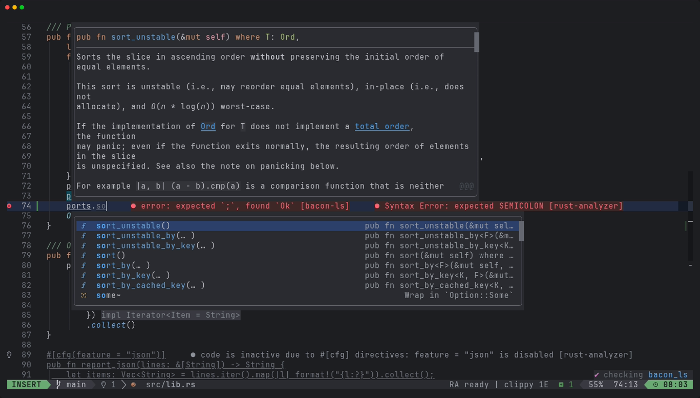
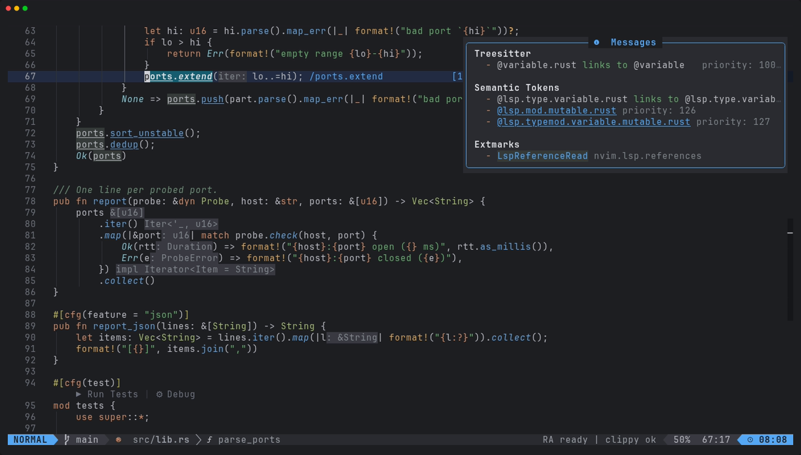
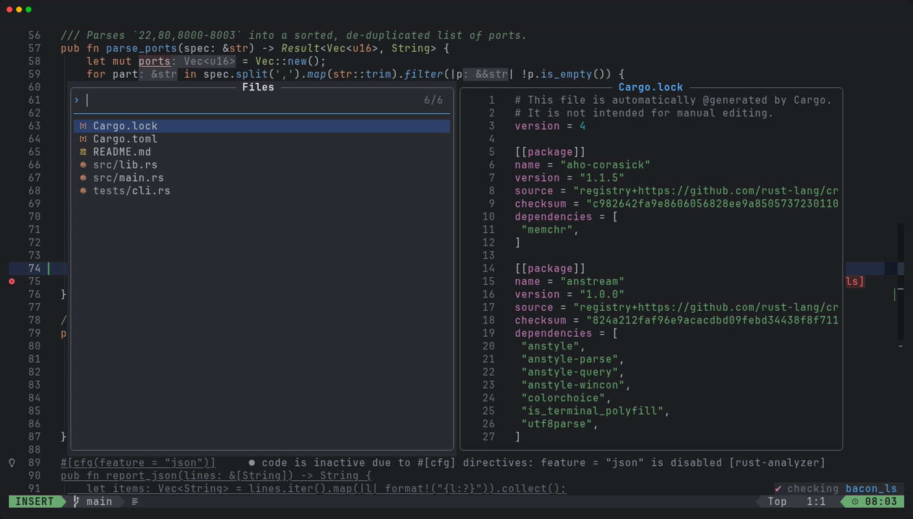

xynovim guide
The Island Dark colour scheme for Neovim
Island Dark is the colour scheme of xynovim, a personal Neovim configuration for Rust. It is a dark scheme with a blue accent and a muted grey for secondary text, mapped to Treesitter captures, LSP semantic tokens and the plugins in this configuration. This guide explains how it is built, how to use and tweak it, and what was adjusted for legibility. It does not claim to be the best dark theme: it is the one I wanted to look at all day.


Using it
Island Dark is set unconditionally in lua/plugins/island-theme.lua, so it is what you get after installing the configuration: :colorscheme island-dark and vim.g.colors_name == "island-dark". The entry point is colors/island-dark.lua, the highlight mapping is lua/island/init.lua and the statusline theme is lua/lualine/themes/island-dark.lua. Only the plugins that LazyVim itself specifies as install fallbacks (tokyonight and catppuccin) remain besides it; there is no theme-switching machinery. Whether the pieces work outside this configuration was not tested.
The palette
The core colours are the same ones this website uses.
- #1e1f22 background
- #2b2d30 popups
- #bcbec4 text
- #9da0a8 secondary
- #56a8f5 blue
- #6aab73 green
- #cf8e6d orange
- #c77dbb purple
- #f2c55c yellow
Generated, not hand-copied
The palette in lua/island/palette.lua is generated from my own colour-scheme export by tools/icls2nvim.py. The export is not distributed, so the script needs a scheme file that you supply yourself; it is standard-library Python and reads colours, bold and italic, underline and undercurl effects and attribute inheritance. The generator also carries the Rust-specific entries that colour structs, enums, macros and lifetimes. Where the export had no value, the mapping derives one: the selection colour comes from a blue entry of the scheme, lifetimes take the type-parameter colour and traits take the struct colour. These derived choices are listed in docs/DETAILS.md. The origin of the scheme is credited in the acknowledgements.
What it colours
Beyond the classic syntax groups, the mapping covers the Treesitter captures, LSP semantic tokens (@lsp.type, @lsp.mod and @lsp.typemod) and these plugins: blink.cmp, snacks, which-key, neo-tree, trouble, gitsigns, diffview, dap and dap-ui, neotest, treesitter-context, navic, flash, noice, mini, harpoon, render-markdown, coverage signs, inlay hints and code lenses. :Inspect shows exactly which captures, semantic tokens and extmarks apply under the cursor, which is the fastest way to change one colour.


:Inspect lists the captures and tokens under the cursor.Legibility lifts
I ran a contrast review with WCAG ratios computed from the loaded highlight groups, with targets of 4.5:1 for body text and 3:1 for secondary text. Where the exported colour was too dim, it was lifted just far enough to pass: comments went from 4.0:1 to 4.5:1, doc comments from 3.8:1, error virtual text to 4.5:1, and line numbers from 2.0:1 to 3.5:1. The cursorline is deliberately subtle (1.20:1 on the background). Known gaps are listed too: PmenuMatchSel is 4.0:1, and the ratios assume the #1e1f22 background, so a terminal with another background changes them.


Transparency and colour-blind mode
- The editor surface (normal text, gutter, line numbers, the file tree) is transparent by default, while floats, the completion menu and which-key keep the solid
#2b2d30popup background so they stay readable over code.<leader>uOtoggles the editor background, andvim.g.xynovim_transparent = falsestarts solid. <leader>uBtoggles colour-blind friendly diagnostics.
Limits
- Not verified: the look in other terminals or with their own background, and plugins whose groups were defined from their documentation but were not on screen (trouble, diffview, dap-ui, neotest, satellite, render-markdown, flash).
- There is no light variant.
Try it
Install the configuration and run :Inspect on a struct name in a Rust file.
git clone https://github.com/xynorash/xynovim ~/.config/nvim # or ln -s <checkout> ~/.config/nvim
~/.config/nvim/scripts/bootstrap.shxynovim is a personal project: the home page has the tour, the install details and the platform status.